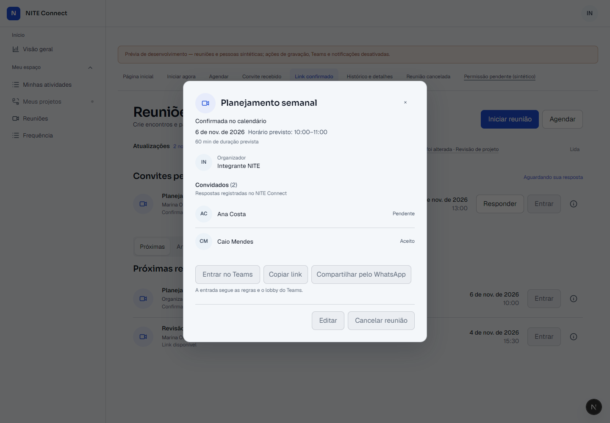
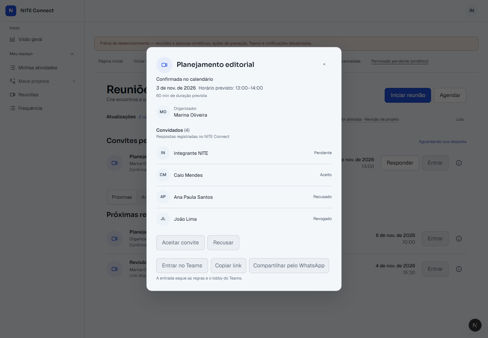
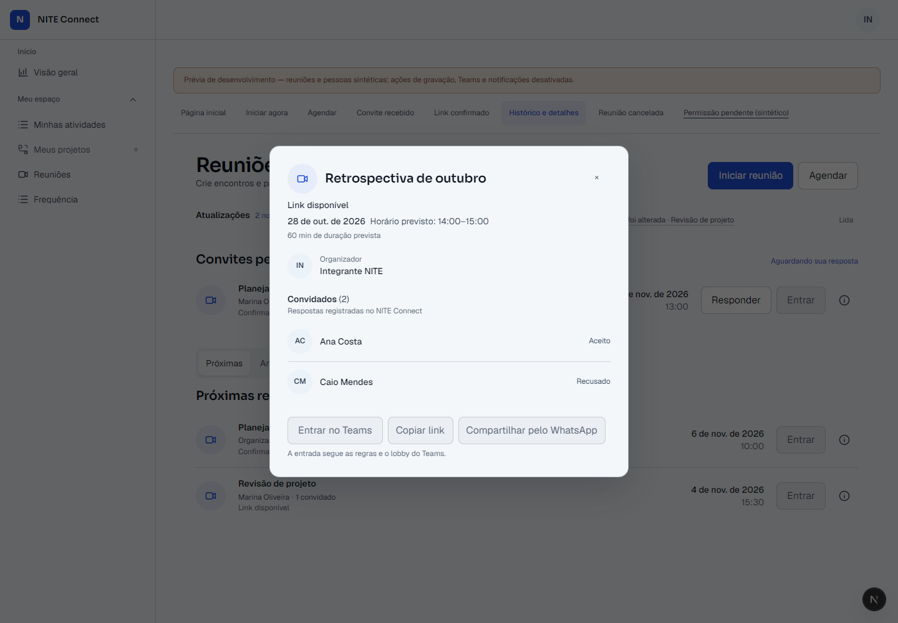
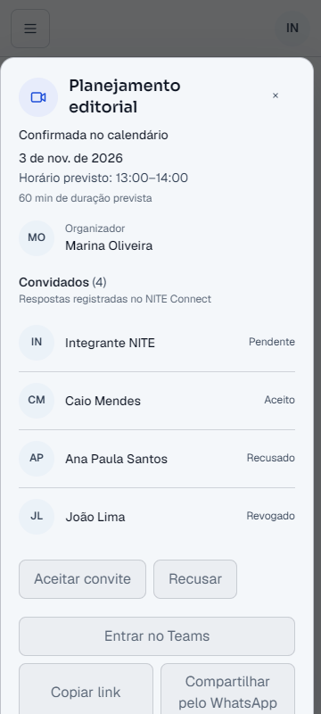
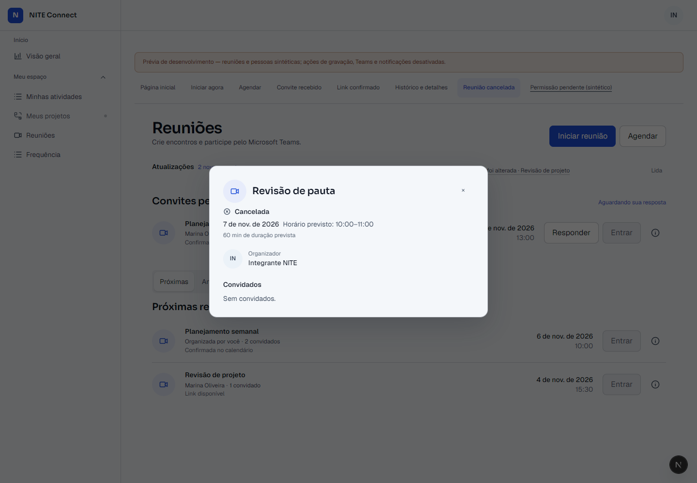
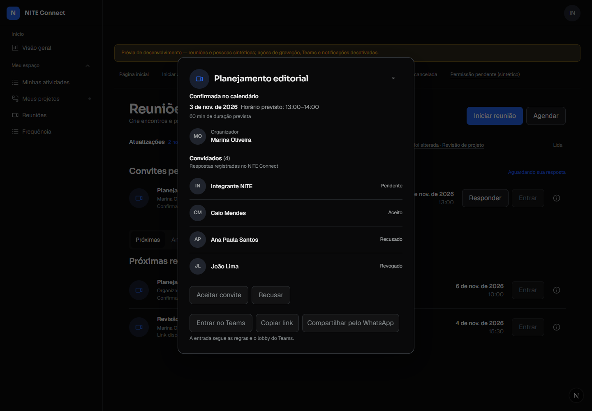
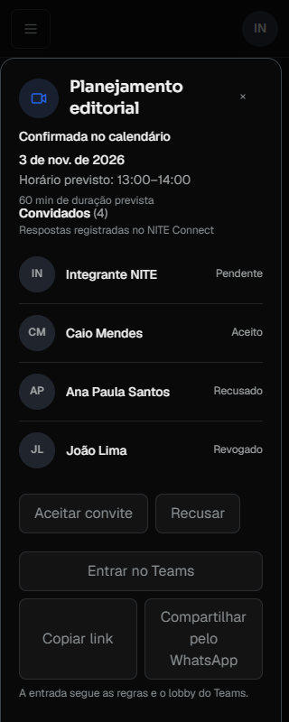

Reuniões — refinamento dos detalhes
Comparação entre capturas Mobbin aprovadas, a implementação anterior e a prévia atual. Os registros e integrantes mostrados nas capturas atuais são sintéticos; ações externas permanecem desativadas nessa prévia.
Composição principal — Amie
Referência aprovada Antes — desktop claro Depois — 1440 px, desktop claro 
Convidados e respostas — Luma
Referência aprovada Antes — dois convidados Depois — quatro respostas sintéticas 
Ações contextuais — Zoom
Referência aprovada Antes — ações em duas linhas Depois — grupo principal e secundário
Data, horário e duração prevista — Calendly
Referência aprovada Antes — data e faixa sem distinção Depois — horário e duração previstos 
Experiência mobile — Granola
Referência aprovada Antes — 360 px, claro Depois — 360 px, claro 
Estados complementares
Cancelada — claro 
Convite — escuro 
Convite — 320 px, escuro, após rolagem interna 